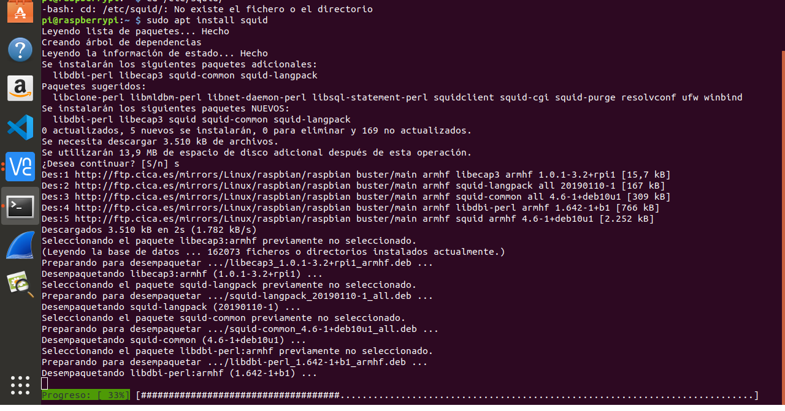
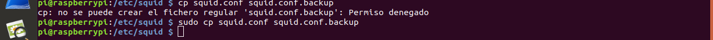
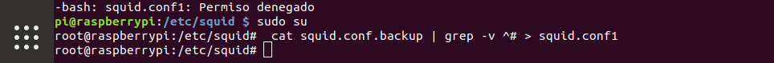
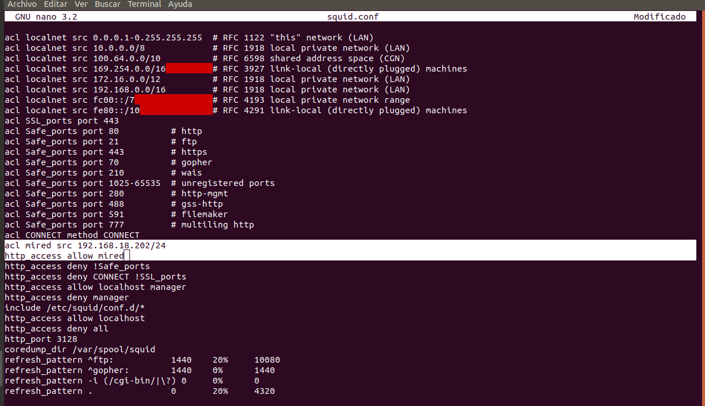

En primer lugar instalamos el squid en nuestra raspberry
Creamos una copia de fichero squid.conf
Quitamos los comentarios al fichero , para hacerlo tendremos que meternos en el root
Quitamos las lineas en blanco que sobran en el fichero
Añadimos acceso a nuestra red local
Lanzamos el servicio squid
Comprobamos que podemos acceder a la red